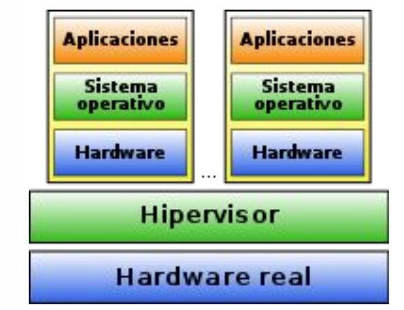
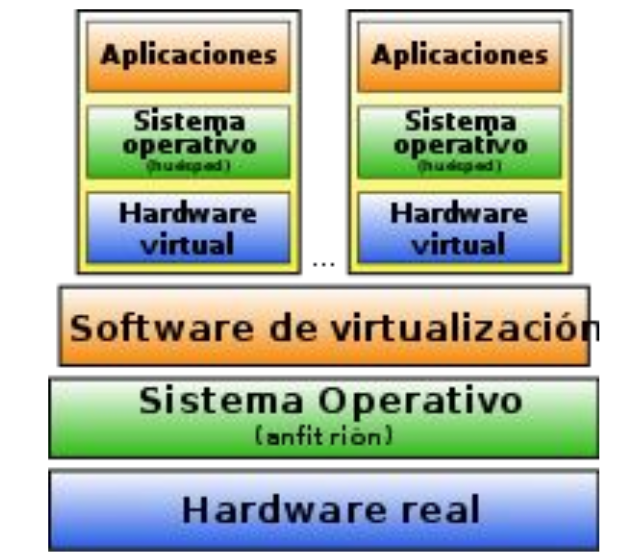

4. Virtualización
4.1. Virtualización de Recursos Tecnológicos
La virtualización de recursos tecnológicos es una tecnología que permite optimizar el uso de hardware y recursos informáticos al crear versiones virtuales de estos recursos.
Estos recursos pueden incluir servidores, sistemas operativos, almacenamiento, redes, aplicaciones y más.
La virtualización permite ejecutar múltiples entornos virtuales de forma independiente en un mismo servidor físico. Esto proporciona una mayor flexibilidad y eficiencia en la gestión de los recursos.
4.2. Conceptos de Virtualización Hardware
-
Anfitrión (Host): El anfitrión es el servidor físico en el que se instala el software de virtualización. Este servidor es responsable de alojar y administrar las máquinas virtuales.
-
Máquina Virtual (VM): Las máquinas virtuales son entornos virtuales independientes que se crean en el servidor anfitrión. Cada VM puede tener su propio sistema operativo, aplicaciones y configuraciones. Las VMs comparten los recursos físicos del host, pero están aisladas entre sí.
-
Hypervisor o Monitor de Máquina Virtual (VMM): El hipervisor es el componente clave de la virtualización. Es el software que se ejecuta en el host y permite la creación, gestión y ejecución de las máquinas virtuales. Los hipervisores pueden ser de tipo 1 (Bare-Metal) o de tipo 2 (Hosted), como se mencionó anteriormente.
4.3. Hipervisores y Tipos
Hipervisor de Tipo 1 (Bare-Metal): Este tipo de hipervisor se ejecuta directamente en el hardware físico del servidor, sin la necesidad de un sistema operativo anfitrión adicional. Esto garantiza un alto rendimiento y eficiencia, ya que las máquinas virtuales se ejecutan más cerca del hardware. Ejemplos de hipervisores de tipo 1 incluyen VMware vSphere/ESXi, Microsoft Hyper-V, Xen y KVM.

Hipervisor de Tipo 2 (Hosted): Los hipervisores de tipo 2 se ejecutan sobre un sistema operativo anfitrión existente. Estos son adecuados para entornos de desarrollo y pruebas, pero pueden tener un rendimiento ligeramente inferior en comparación con los hipervisores de tipo 1. Ejemplos de hipervisores de tipo 2 incluyen VirtualBox, VMware Workstation y Parallels Desktop.

4.4. Cómo Funciona la Virtualización
La virtualización se basa en la abstracción de los recursos físicos del servidor. El hipervisor se encarga de crear capas de abstracción entre las máquinas virtuales y el hardware subyacente. Cuando una VM necesita recursos, el hipervisor los asigna de manera dinámica, asegurando que cada VM tenga acceso a la cantidad necesaria de CPU, memoria, almacenamiento y red. La virtualización también incluye características como instantáneas (snapshots), clonación, migración en caliente y escalabilidad, lo que facilita la administración de las VM.
4.5. Ventajas y Desventajas de la Virtualización
Ventajas:
-
Mayor Utilización de Recursos: La virtualización permite consolidar múltiples aplicaciones y servidores en una sola máquina física, lo que optimiza la utilización de recursos.
-
Aislamiento: Cada máquina virtual es independiente y aislada, lo que evita que un fallo en una VM afecte a otras.
-
Migración y Flexibilidad: Las VMs pueden moverse entre servidores físicos, lo que facilita la migración, la recuperación ante desastres y la alta disponibilidad.
-
Optimización de Costos: La virtualización reduce los costos operativos al requerir menos hardware físico y simplificar la administración.
Desventajas:
- Overhead: Existe una pequeña pérdida de rendimiento debido al software de virtualización.
-
VMware Fusion: (para entornos de escritorio).
-
Licenciamiento: Algunos productos de virtualización requieren licencias costosas, lo que puede aumentar los costos.
-
Seguridad: Si no se configura correctamente, las VMs pueden ser vulnerables a amenazas de seguridad. La administración y el acceso adecuados son críticos.
4.6. Software de Virtualización
Existen varias soluciones de software de virtualización en el mercado, tanto comerciales como de código abierto. Algunas de las más populares incluyen:
- VMware vSphere/ESXi: Un hipervisor de tipo 1 líder en la industria con una amplia gama de características.
- VMware Workstation: Un hipervisor de tipo 2 para entornos de escritorio.
- Microsoft Hyper-V: Un hipervisor de tipo 1 desarrollado por Microsoft, a menudo utilizado en entornos de Windows.
- KVM (Kernel-based Virtual Machine): Un hipervisor de código abierto que se ejecuta en sistemas Linux.
- VirtualBox: Un hipervisor de tipo 2 de código abierto que es popular para entornos de desarrollo y pruebas.
- Proxmox Virtual Environment: Una plataforma de virtualización de código abierto que combina KVM y contenedores LXC.
4.7. Virtual Box
VirtualBox es una herramienta de virtualización que permite a los usuarios crear y ejecutar máquinas virtuales en un sistema anfitrión. A continuación, se presentan sus características más importantes y cómo crear una máquina virtual a partir de una imagen ISO:
- Soporte Multiplataforma: VirtualBox es compatible con varios sistemas operativos, incluyendo Windows, Linux, macOS y más.
- Migración en Caliente: Permite la migración de máquinas virtuales en ejecución de un sistema anfitrión a otro sin interrupciones.
- Portabilidad: Las máquinas virtuales creadas en VirtualBox son altamente portátiles y se pueden transferir fácilmente a otros sistemas que ejecuten VirtualBox.
- Interfaz Gráfica Intuitiva: Ofrece una interfaz de usuario gráfica fácil de usar para la gestión de máquinas virtuales.
- Redes Personalizables: Permite configurar redes internas, NAT, adaptadores puente y más para personalizar la conectividad de las máquinas virtuales.
- Instantáneas: Facilita la creación de instantáneas de máquinas virtuales para restaurar estados anteriores en caso de problemas.
- Extensiones y Adiciones: VirtualBox admite extensiones y adiciones que mejoran la funcionalidad de las máquinas virtuales.
Pasos para la creación de una Máquina Virtual desde una ISO
- Descarga e Instalación de VirtualBox: Descarga e instala VirtualBox desde el sitio web oficial.
- Crear una Nueva Máquina Virtual: Abre VirtualBox y haz clic en "Nueva". Sigue el asistente para configurar la máquina virtual.
- Asignar Recursos: Define la cantidad de memoria RAM, CPU y espacio de almacenamiento para la máquina virtual.
- Seleccionar la ISO: Durante la configuración, elige la opción de arrancar desde una imagen ISO y selecciona la imagen ISO que deseas utilizar.
- Instalar el Sistema Operativo: Inicia la máquina virtual. Se iniciará desde la ISO y podrás instalar el sistema operativo cómo lo harías en una computadora física.
- Personalizar Configuraciones: Después de la instalación, personaliza la configuración de la máquina virtual según tus necesidades.
4.7.1. Snapshots en VirtualBox
Las snapshots son una función que permite tomar una "foto" instantánea del estado actual de una máquina virtual. Esta instantánea incluye el sistema operativo, las aplicaciones y los datos tal como están en el momento de la captura. Las snapshots son útiles para:
- Backups: Puedes tomar una snapshot antes de realizar cambios significativos en la máquina virtual. Si algo sale mal, puedes restaurarla al estado previo.
- Testing: Facilitan la experimentación. Puedes crear diferentes instantáneas para probar configuraciones sin riesgo.
- Registro de Desarrollo: Los desarrolladores pueden utilizar snapshots para registrar diferentes etapas del desarrollo de software.
Cómo funcionan:
- Para crear una snapshot, selecciona la máquina virtual en VirtualBox y elige "Tomar una instantánea".
- Puedes darle un nombre y descripción a la snapshot para identificarla fácilmente.
- Una vez creada, puedes volver a ese estado en cualquier momento.
4.7.1. Clonaciones en VirtualBox
Las clonaciones son la capacidad de duplicar una máquina virtual existente. Esto puede ser útil para crear múltiples copias idénticas de una VM, ahorrando tiempo y recursos. Las clonaciones son útiles para:
- Desarrollo y Pruebas: Puedes clonar una VM para probar diferentes configuraciones o escenarios sin afectar la original.
- Implementación de Servidores: Facilita la creación de múltiples instancias de servidores idénticos.
Cómo funcionan:
- Selecciona la máquina virtual que deseas clonar en VirtualBox.
- Elige "Clonar" y configura las opciones, como si deseas una copia completa o enlazada.
- Una vez clonada, puedes iniciar y usar la nueva máquina virtual de la misma manera que la original.
Consejos Importantes
- Las snapshots consumen espacio en disco, así que adminístralas cuidadosamente para evitar llenar el almacenamiento.
- Las clonaciones enlazadas comparten recursos con la VM original y ocupan menos espacio en disco, pero los cambios afectan a todas las instancias vinculadas.
- Estas características hacen que VirtualBox sea una herramienta versátil para la gestión y desarrollo de máquinas virtuales. Asegúrate de entender cómo funcionan antes de usarlas en tu entorno de virtualización.
4.8. AWS
Amazon Web Services (AWS) es una plataforma de servicios en la nube ofrecida por Amazon. Proporciona una amplia gama de servicios en la nube que permiten a las empresas y desarrolladores ejecutar aplicaciones y servicios en línea de manera eficiente y escalable.
AWS ofrece servicios como almacenamiento, bases de datos, redes, análisis, inteligencia artificial, aprendizaje automático, y más. Estos servicios se distribuyen a través de centros de datos en todo el mundo, lo que permite a los usuarios acceder a recursos informáticos de alto rendimiento de manera flexible.
Amazon Elastic Compute Cloud (EC2) es uno de los servicios más populares de AWS y permite crear máquinas virtuales (instancias) en la nube. Aquí tienes los pasos para crear una instancia EC2:
- Iniciar sesión en AWS: Accede a tu cuenta de AWS o crea una si aún no tienes una.
- Acceder al Panel de Control de AWS: Una vez dentro, accede al panel de control de AWS desde el menú de servicios.
- Seleccionar EC2: En el panel de control, encuentra y selecciona "EC2" bajo la categoría "Compute".
- Lanzar una Instancia: Haz clic en el botón "Lanzar una instancia" para iniciar el asistente de creación.
- Elegir una Imagen (AMI): Selecciona una imagen de máquina virtual (AMI) que se adapte a tus necesidades, como una versión de Linux o Windows.
- Configurar la Instancia: Define la cantidad de instancias, el tipo de instancia, y otras configuraciones como la red y el almacenamiento.
- Crear una Clave de Acceso: Crea o selecciona una clave de acceso que te permitirá conectarte a la instancia de forma segura.
- Revisar y Lanzar: Revisa tus configuraciones y haz clic en "Lanzar" para iniciar la instancia.
- Asociar Reglas de Seguridad: Configura reglas de seguridad para controlar el acceso a la instancia.
- Conectar a la Instancia: Utiliza software de acceso remoto (por ejemplo, SSH para Linux) para conectarte a tu instancia EC2.
4.9. Mapa Mental
graph LR;
Virtualizacion[Virtualización];
A[Virtualización de Recursos Tecnológicos];
B[Conceptos de Virtualización Hardware];
C[Hipervisores y Tipos];
D[Cómo Funciona la Virtualización];
E[Ventajas y Desventajas de la Virtualización];
F[Software de Virtualización];
Virtualizacion-->A;
Virtualizacion-->C;
Virtualizacion-->D;
Virtualizacion-->E;
Virtualizacion-->F;
A-->B;
B-->1[Anfitrión];
B-->2[Máquina Virtual ];
B-->3[Hypervisor o Monitor de Máquina Virtual];
C --> 4[Hipervisor de Tipo 1 Bare-Metal];
C --> 5[Hipervisor de Tipo 2 Hosted];
D --> 6[Abstracción de Recursos];
D --> 7[Asignación de Recursos];
D --> 8[Características de la Virtualización];
E --> 9[Ventajas];
E --> 10[Desventajas];
F --> 11[VMware vSphere-ESXi];
F --> 12[VMware Workstation];
F --> 13[Microsoft Hyper-V];
F --> 14[KVM Kernel-based Virtual Machine];
F --> 15[VirtualBox];
F --> 16[Proxmox Virtual Environment];